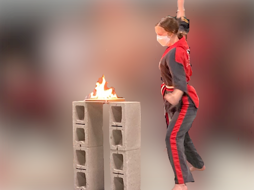

I've been practicing Taekwondo for over 7 years and am now a first-degree black belt at Master Chang's Martial Arts.

Brookfield High School Clubs
I competed on the Math League's A-team, which ranked #8 in the county.
I was also a member of Brookfield High School's Art of Thinking club, which explored the intersection of intellectual, historical, cultural, and scientific aspects.
As a member of the Diversity Club, I focused on making our school's community more welcoming for everyone. This included creating educational presentations and posters.